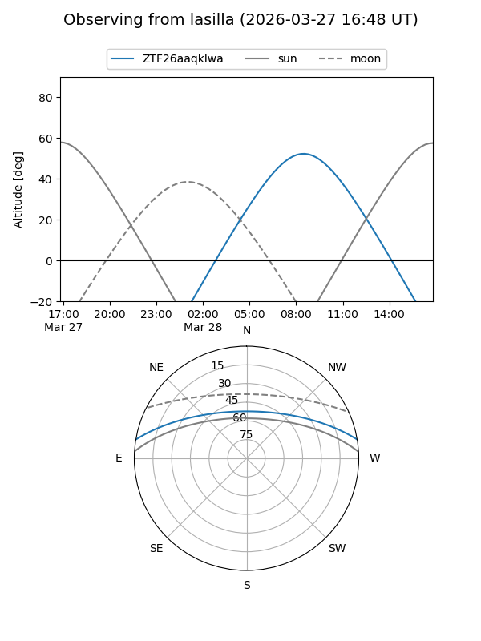
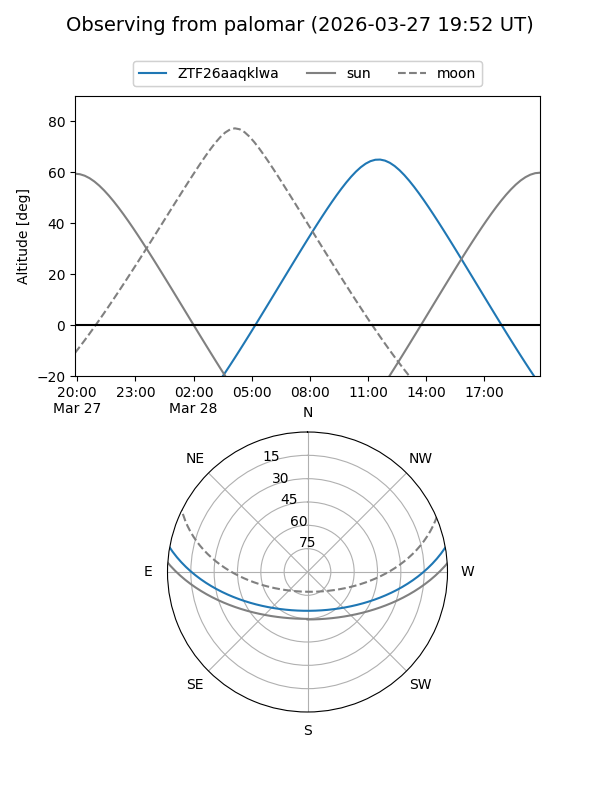

ZTF26aaqklwa
Target ZTF26aaqklwa at 2026-03-27 14:35
Aliases and brokers:
FINK: link
Lasair: link
ALeRCE: link
alt names
ZTF26aaqklwa (ztf,fink_ztf)
Coordinates:
equatorial (ra, dec) = 241.8652,+8.48448
equatorial (HMS+DMS) = 16:07:27.65,+08:29:04.15
galactic (l, b) = (20.5025,+40.14354)
Flags:
Photometry:
last ztfg=17.63
1 ztfg detections
Lightcurve
Visibility


Additional plots